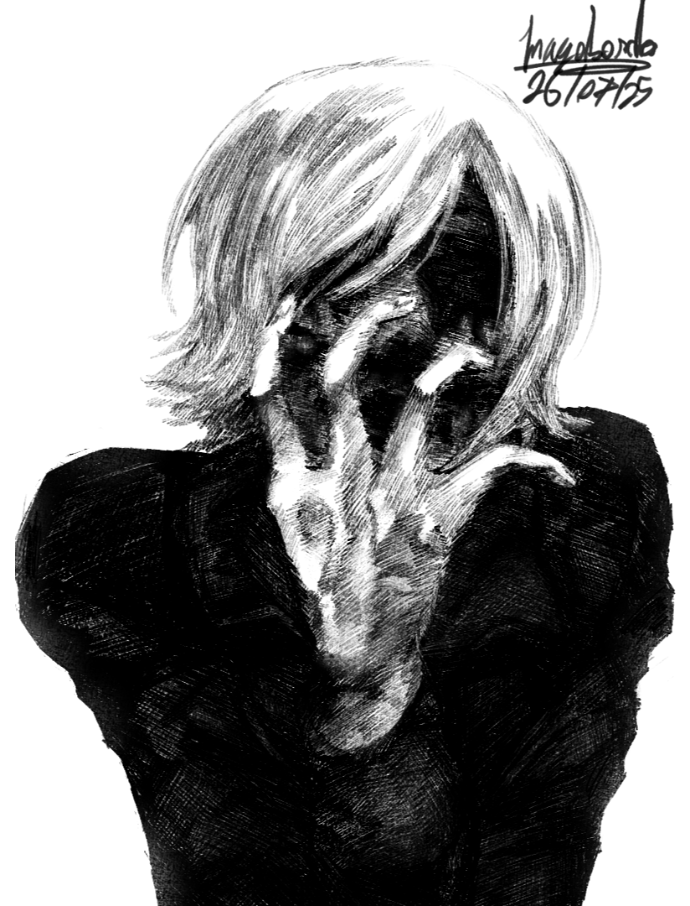
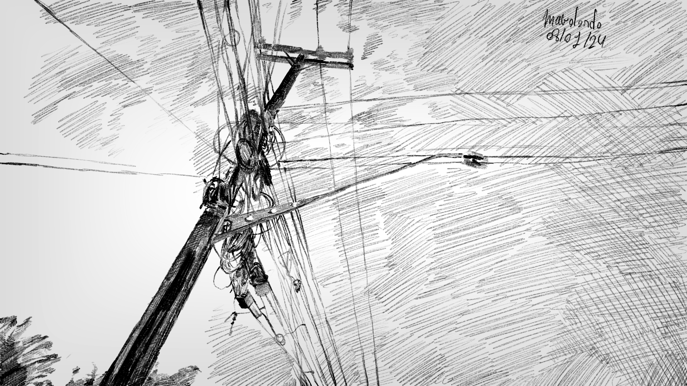
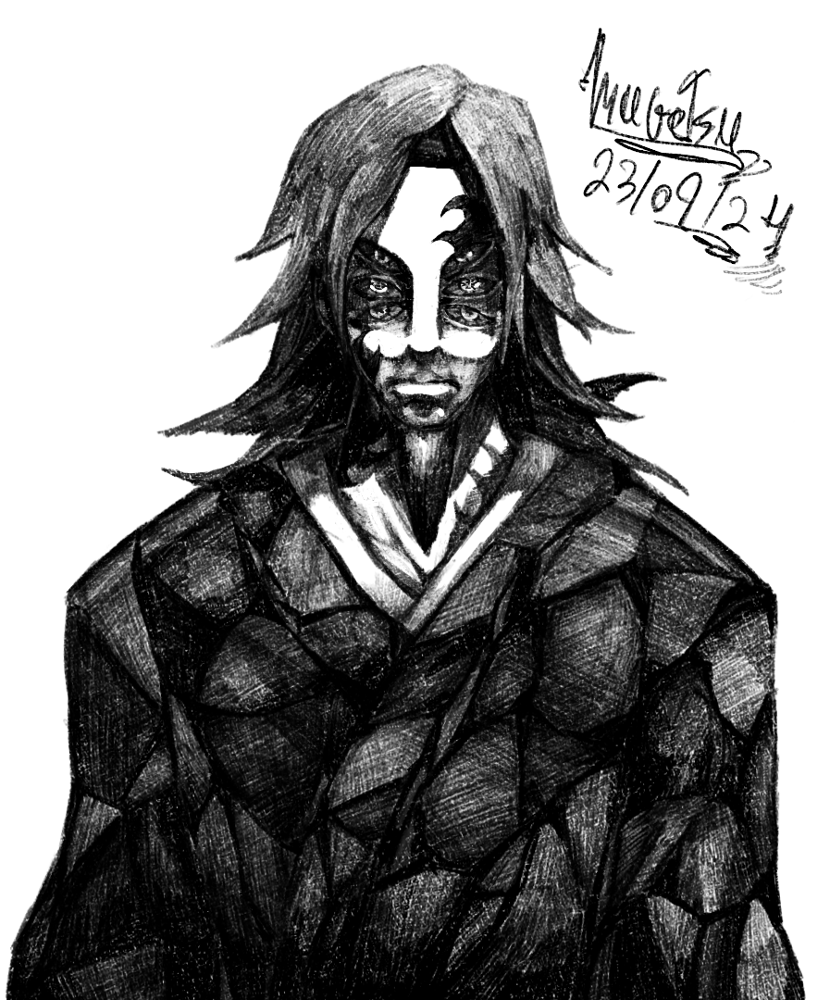
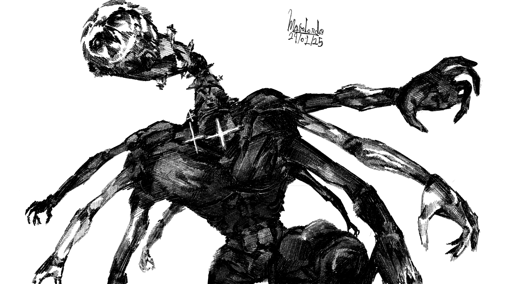
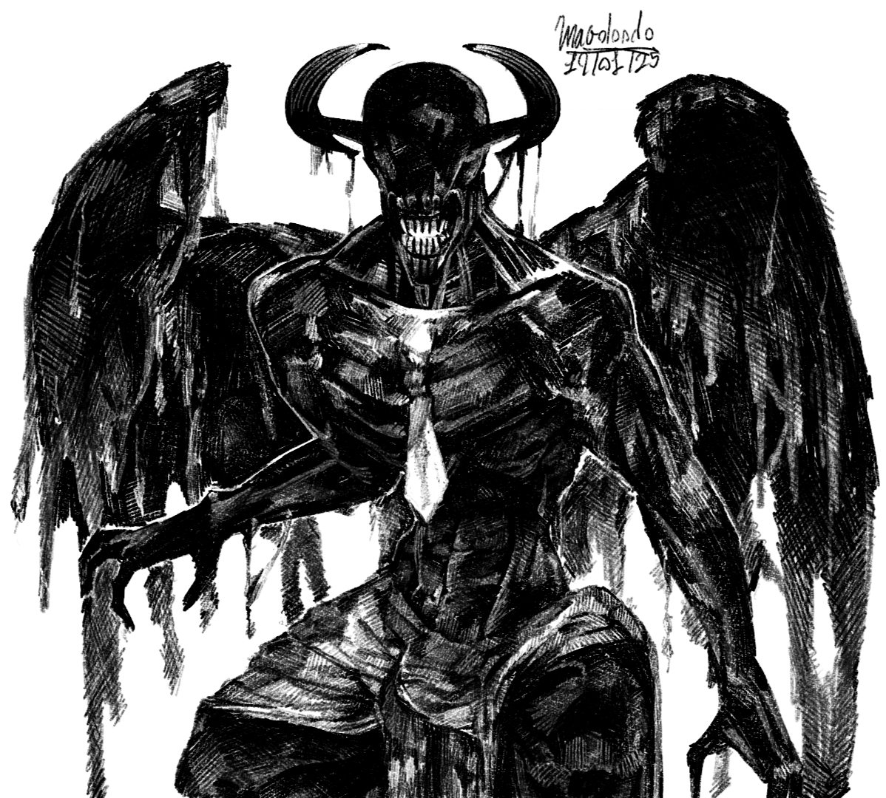
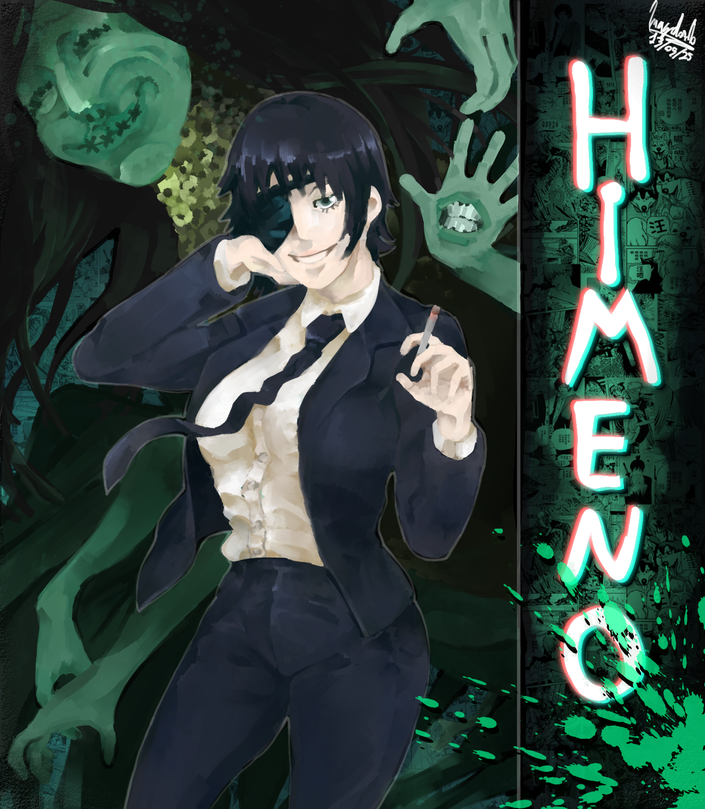
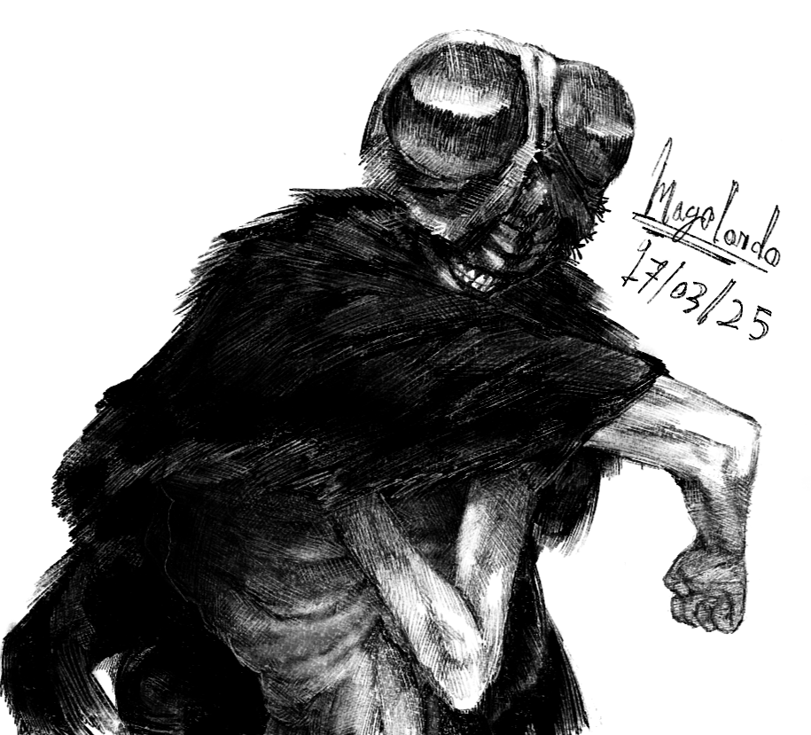
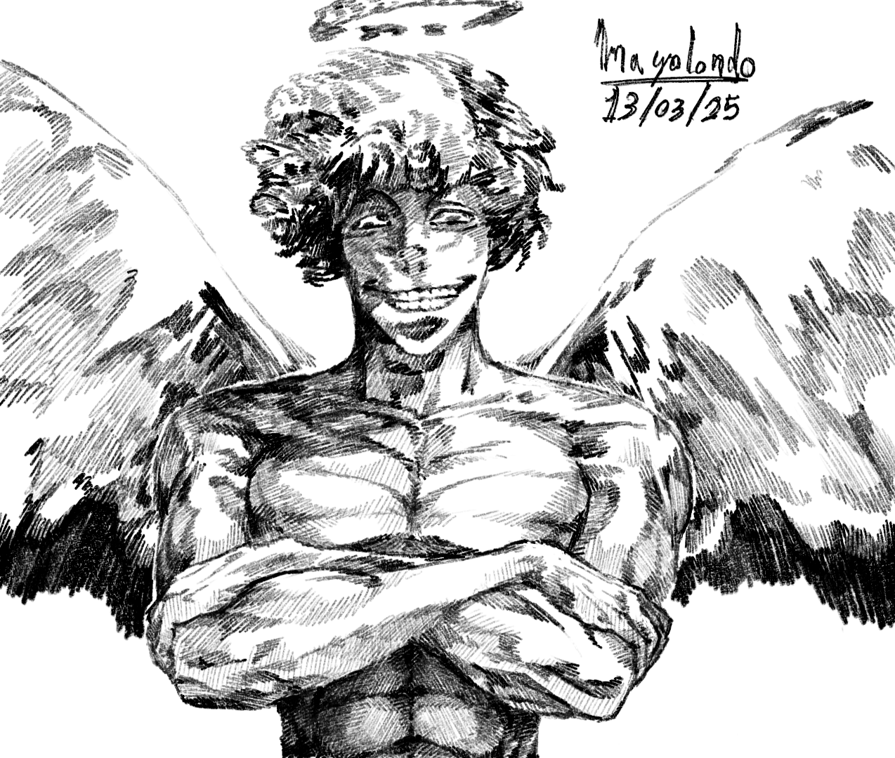

As of today, I am 18 years old and have been an artist for all 18 of those years.
My native language is Portuguese, as I am Brazilian, but the language I am most fluent in is the one I draw in. Whether it’s my emotions or my thoughts, letters or sketches, I use art to express what I can’t put into words.
I draw for fun, but also professionally. I have made around 200 dollars selling commissions through Discord in 2025, and I plan on making more in 2026.
Below are a few examples of my work.

Stumbled my toe - 26th, July 2025

Beach - 18th, May 2025

Stop - 8th, January 2024

Kokushibo (commisioned) - 23rd, September 2024

Owl - 29th, Januart 2025

Gargoyle - 19th, January 2025

Home - 16th, January 2025

Himeno (Comissioned) - 13th, May 2025

Beelzebub - 17th, March 2025

Lucifer - 13th, March 2025